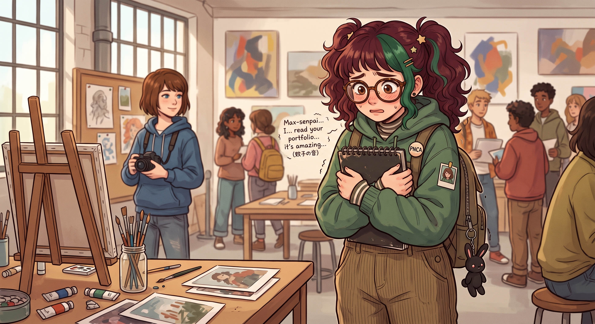

扮豬吃老虎的開端（倒敘）

第一幕：相機、咖啡與微小的時間回溯
作為 PNCA 的學姐，Max 在校園裡一直保持著邊緣觀察者的姿態。直到那場發生在學生餐廳的霸凌事件。
幾個仗著家裡有錢、平時在雕塑系橫行霸道的兄弟會成員，盯上了大一新生 Lily。他們故意在經過 Lily 身邊時「腳滑」，將一大杯滾燙的焦糖瑪奇朵潑向了 Lily 放在桌上的筆記本電腦和她辛辛苦苦整理的藝術史報告。
躲在角落喝著咖啡的 Max 看到了這一幕。出於對弱者的保護慾，以及不想看到一個無辜學妹的努力被毀掉，Max 嘆了口氣，舉起手。
時間回溯發動。
場景倒轉回三十秒前。這一次，Max 沒有選擇去撞開惡霸，而是快步走到 Lily 身邊，在那杯咖啡潑出的瞬間，一把將 Lily 連人帶電腦拉開，自己的身體正正擋在了那杯滾燙咖啡的軌跡上。
「唔——」
滾燙的液體潑灑在 Max 的連帽衫上，瞬間洇濕了一大片。惡霸們先是一愣，隨即爆發出一陣輕蔑的哄笑：「哈！這學姐是走路不長眼睛嗎？自己撞上來的，還真是笨手笨腳！」
Max 揉了揉被燙紅的手臂，臉上卻沒有半分惱怒或委屈。比起阿卡迪亞灣那場幾乎吞噬整個小鎮的風暴、比起親眼目睹過的生死抉擇，眼前這點滾燙的咖啡和幾句嘲笑，實在算不上什麼。她只是雲淡風輕地扯了扯濕透的衣角，聳聳肩，轉身拿起餐巾紙擦了擦，便若無其事地走開了。
坐在桌前的 Lily，卻把這一切看得清清楚楚。
她清楚地看見，Max 出現的那個瞬間，跟咖啡潑出的軌跡分毫不差，快得根本不像是巧合。而面對那些嘲笑，Max 臉上那種近乎超然的平靜，也讓 Lily 心裡某個地方，被輕輕觸動了一下。
「學姐，」下課後，Lily 追上正要離開的 Max，推了推圓框眼鏡，眼睛裡閃爍著極度敏銳的光芒，「根據剛才那杯咖啡潑灑的角度和您出現的時機，您的移動速度已經超出了正常人類反應時間的物理極限。除非，您『提前』就知道了會發生什麼。」
Max 瞬間冷汗直冒，只能隨便找個藉口落荒而逃。但從那一刻起，Lily 就在心裡單方面宣佈：這位為了保護陌生學妹、甘願自己承受燙傷與嘲笑卻毫不在意的學姐，是她要在這個殘酷校園裡誓死守護的對象。
插曲：一通不經意的電話
那個週末，Lily 因為在圖書館為 Max 送還一本弄丟又找回的參考書，恰好撞見 Max 坐在中庭的長椅上接了一通視訊電話。
螢幕那頭是一個染著藍髮、笑聲粗獷的女孩，兩人有一搭沒一搭地聊著皮卡的引擎保養、聊著波特蘭最近的天氣，語氣裡沒有任何算計或客套，只有一種毫不設防的、近乎孩子氣的親近。掛斷前，那女孩隨口說了句「別忘了拍照片給我看妳最近在拍什麼，老娘的手機相簿都快被妳的破照片占滿了」，Max 笑著回了句「閉嘴，妳明明每張都存下來了」。
Lily 站在不遠處，握著那本書，久久沒有上前打擾。
她說不清楚那種感覺是什麼，只知道胸口忽然被什麼東西輕輕撞了一下。那種毫無保留、不計較誰對誰更有用、單純因為喜歡而喜歡的相處方式——她曾經也擁有過，在很小很小的時候，在那間會漏水的老公寓裡，在巷口那家牛肉麵攤前。只是後來，那份純粹被一點一點置換成了「這樣做對妳未來有幫助」，直到她幾乎忘記了，原來人與人之間的羈絆，可以完全不需要摻雜任何條件。
那一刻，Lily 忽然明白了自己為什麼會如此在意這位素未謀面的學姐。不只是因為她救了自己一次，更是因為，在 Max 和那個藍髮女孩之間，她看見了一種她以為早已從自己生命裡徹底消失的東西——而她想要守護的，或許不只是 Max 一個人，而是這份她曾經失去、卻奇蹟般在別人身上完整保留下來的溫暖。
第三幕：一份主動遞出的履歷
那通電話帶來的觸動，在 Lily 心裡發酵了整整一個星期。
她開始不自覺地留意工坊的動態——PNCA 的公告欄上，時不時會貼出「二號車廂藝術工坊誠徵實習生」的傳單，落款是一個叫 Victoria Chase 的名字。Lily 之前每次路過都只是匆匆一瞥，這次卻破天荒地停下腳步，把那張傳單的聯絡方式，一字一句地抄進了自己的筆記本。
她告訴自己，這只是單純為了修滿學分需要的校外實習時數，跟那通電話裡聽到的溫暖沒有任何關係。但當她坐在宿舍書桌前，反覆修改著那份履歷的自我介紹段落，卻寫了又刪、刪了又寫，遲遲無法把「我想找一份實習」這句話寫得像表面上那樣雲淡風輕。
最終，她只留下了最簡單誠實的一句：「我在校園裡見過您的作品與為人，希望能有機會向您學習。」
最終幕：帶著履歷敲開車廂的門
幾天後，二號車廂迎來了一個意想不到的訪客。
Max 剛結束一天的暗房工作，推開車廂大門，就看見一個熟悉的身影站在門口——那個曾經在餐廳裡精準識破她時間回溯的學妹，此刻正緊張地用雙手抱著一個文件夾，指節因為用力而微微發白，臉上掛著一絲不易察覺的忐忑。
「學姐，好久不見。」Lily 推了推圓框眼鏡，微微鞠了一躬，聲音比平時更輕，「聽說您和幾位朋友在經營一間工坊，正好在招募實習生。這是我的履歷……我知道我沒有什麼相關的實務經驗，但我很願意學習，也做事很仔細。」
Max 站在門口，看著眼前這個曾經只在校園裡驚鴻一瞥的學妹，一時間百感交集，喉嚨裡擠出一句：「……妳最好先進來，我們有很多話要說。」
車廂的大門，在暮色中緩緩敞開。二號車廂的食物鏈，即將迎來一場永久性的、天翻地覆的重組。
故事的時間點，實際發生在第二季波特蘭工坊時期